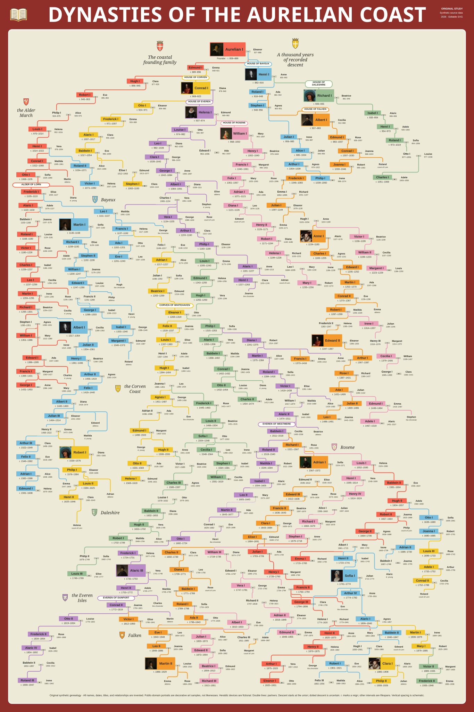
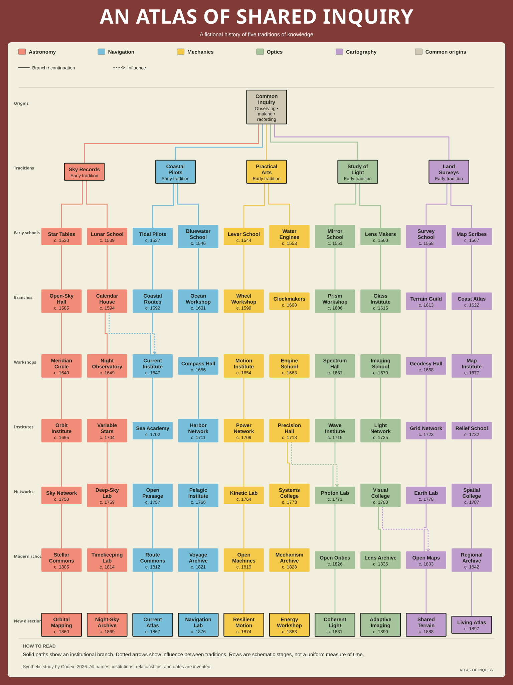

genealogy
Dynasties Of The Aurelian Coast
A founding family, seven houses, and the marriages that joined their branches
UsefulCharts-style · Original SVG studies
Three original studies in genealogical structure, branching knowledge, and parallel history. They explore the spatial hierarchy, semantic colors, compact typography, and routed connections of educational wall charts.
All data is synthetic. These studies are inspired by the visual organization of UsefulCharts and are independently authored; they are not UsefulCharts products.

genealogy
A founding family, seven houses, and the marriages that joined their branches

lineage
Individually authored fictional histories of institutions, unions and research traditions

timeline
Divisions, unions, and changing societies in five fictional regions, 1000–2000